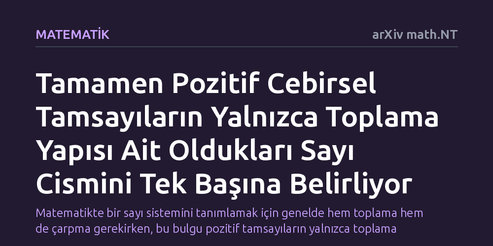

MATEMATIK · arXiv math.NT · 2026-09-11
Araştırmacılar, tamamen gerçel sayı cisimlerindeki pozitif cebirsel tamsayıların sadece toplama yapısına bakarak cismin kendisinin belirlenip belirlenemeyeceğini inceledi. Elde edilen soyut toplamsal yarıgrup yapısının, çarpma işlemine gerek kalmaksızın ilgili sayı cismini tek başına ve bütünüyle belirlediği kanıtlandı.
Matematikte bir sayı sistemini tanımlamak için genelde hem toplama hem de çarpma gerekirken, bu bulgu pozitif tamsayıların yalnızca toplama ilişkilerinin bile bütün sistemi tek başına kodlamaya yettiğini gösteriyor.

Günlük hayatta ve temel matematikte kullandığımız sayı sistemleri genellikle iki ana sütun üzerine kuruludur: toplama ve çarpma. Cebirde bir sayı kümesini, örneğin rasyonel sayıları veya köklü ifadeleri içeren daha geniş cisimleri tanımlamak istediğimizde, bu iki işlemin birbiriyle nasıl etkileştiğine bakarız. Çarpma işlemi olmadan bir sayı sisteminin tüm zengin yapısını koruyamayacağımız, işlemlerden biri eksik olduğunda sistemin kimliğini kaybedeceği düşünülür.
Sayı kuramcıları uzun süredir şu temel sorunun peşindedir: Bir cebirsel sayı sisteminin sadece pozitif tamsayılarını alsak ve bunlara yalnızca toplama işlemiyle baksak, sistemin geri kalanını tamamen unutmuş olur muyuz? Yoksa yalnızca toplama kuralları bile o sistemin kime ait olduğunu fısıldamaya devam eder mi? Vitezslav Kala ve Ritoprovo Roy tarafından hazırlanan bu çalışma, tam olarak bu temel soruya odaklanıyor.
Bu araştırma laboratuvarda deneklerle ya da bilgisayar simülasyonlarıyla yürütülen bir deney değil; soyut cebir ve cebirsel sayılar kuramının mantıksal türetim araçlarıyla inşa edilmiş kuramsal bir matematik kanıtıdır. Yazarlar, tamamen gerçel sayı cisimleri adı verilen ve karmaşık sayı içermeyen özel sayı kümelerini inceleme altına almıştır.
İncelenen nesne, bu cisimlerin içinde yer alan tamamen pozitif cebirsel tamsayılar kümesidir. Araştırmacılar bu kümeyi çarpma işleminden tamamen arındırarak soyut bir toplamsal yarıgrup şeklinde ele almıştır. Ardından, daha küçük iki pozitif parçanın toplamı olarak yazılamayan parçalanamaz elemanları belirlemiş ve bu elemanların birbirleriyle nasıl toplandığını tanımlayan somut bir bağıntılar sistemini inşa etmiştir.
Araştırmanın temel sonucu, tamamen pozitif cebirsel tamsayıların oluşturduğu soyut toplamsal yarıgrubun, ait olduğu sayı cismini tekil ve eksiksiz olarak belirlediğidir. Diğer bir deyişle, iki farklı tamamen gerçel sayı cisminin pozitif tamsayıları aynı toplama yapısına sahip olamaz; toplama yapısını bildiğiniz anda cismin kendisini de tam olarak bulmuş olursunuz.
Yazarlar ayrıca bu toplamsal yapıdaki tüm ilişkileri somut bir üreteç ve bağıntı sistemiyle açıkça tarif etmeyi başarmıştır. Üstelik bu temsilin yalnızca sayı cisimleriyle sınırlı kalmadığı, yazarların yarı-kafesler olarak adlandırdığı daha genel bir ayrık yarıgrup sınıfında da geçerli olduğu gösterilmiştir.
Matematik dünyasında bir yapının daha az bilgiyle yeniden kurulabilmesi her zaman derin bir yapısal bağın varlığına işaret eder. Normal koşullarda bir cismi kurmak için çarpma ve toplamanın dağılma özelliğiyle birbirine bağlanması gerekirken, pozitif cebirsel tamsayıların toplama iskeletinin cismin tüm çarpımsal ve cebirsel kimliğini gizli bir biçimde içinde barındırdığı anlaşılmaktadır.
Bu bulgu, cebirsel sayıların geometri ve aritmetik arasındaki köprülerini daha iyi kavramamıza olanak tanıyor. Araştırma, sayı cisimlerinin sınıflandırılmasında ve pozitif elemanların aritmetiğinin anlaşılmasında yeni kuramsal soruların önünü açmaktadır.